Gênese e Classificação do Solo:
Mineralogia do solo e suas funções ambientais
Instituto Federal do Paraná
Curso Superior em Engenharia Agronômica
28 de setembro de 2026
Composição do solo
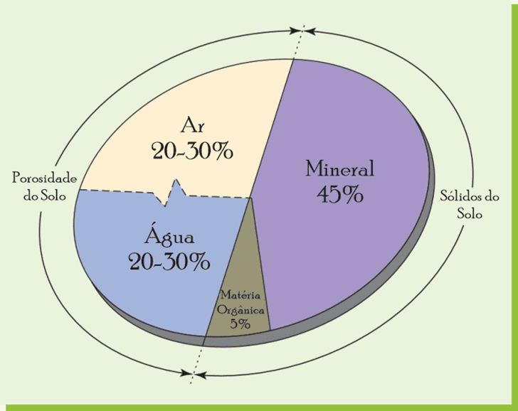
Importância mineral
A fração mineral representa, em geral, mais de 90% da massa sólida da maioria dos solos.
Compreender a origem e a natureza desses minerais é essencial para entender a fertilidade, a física e a química do solo.
- Determinam a textura e a estrutura do solo;
- Controlam a Capacidade de Troca Catiônica (CTC);
- Regulam a disponibilidade de nutrientes;
- Influenciam a cor, a retenção de água e o comportamento físico;
- Orientam decisões de manejo, calagem e adubação.
A fração mineral do solo
Minerais primários
- Herdados diretamente da rocha-mãe;
- Não sofreram alteração química significativa;
- Predominam nas frações areia e silte.
Minerais secundários
- Formados no próprio solo;
- Resultam do intemperismo dos primários;
- Predominam na fração argila.
A fração mineral do solo
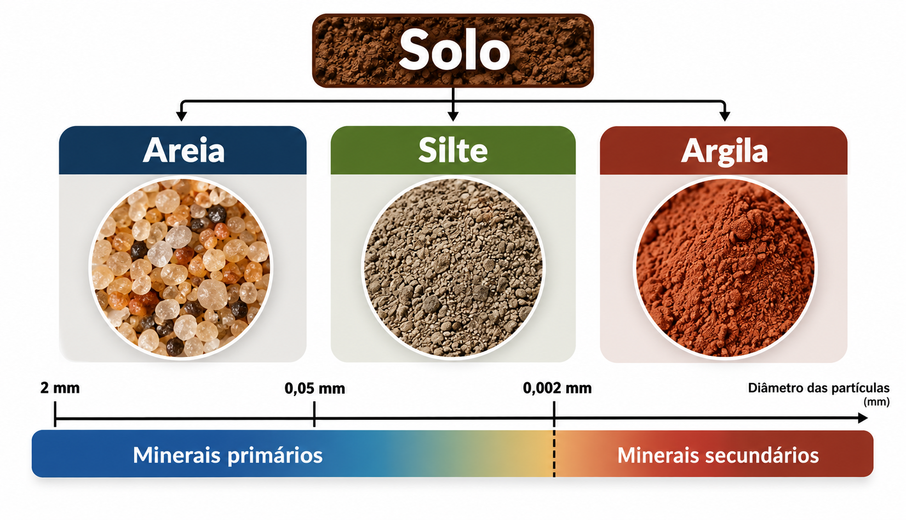
Composição da crosta terrestre
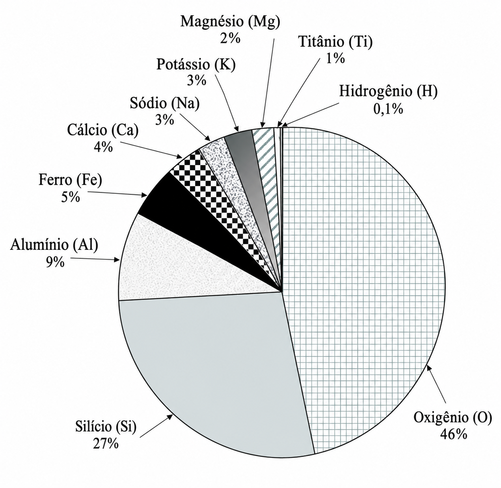
Minerais primários x minerais secundários
| Característica | Minerais primários | Minerais secundários |
|---|---|---|
| Origem | Rocha-mãe (magmática, metamórfica) | Intemperismo dos primários |
| Localização no solo | Frações areia e silte | Fração argila |
| Estabilidade | Variável (função da estrutura cristalina) | Mais estáveis nas condições de superfície |
| Exemplo | Quartzo, feldspato, mica | Caulinita, esmectita, óxidos de Fe/Al |
Intemperismo de minerais primários
O intemperismo físico fragmenta a rocha, aumentando a superfície de contato.
O intemperismo químico (hidrólise, oxidação, dissolução, hidratação) altera a estrutura cristalina dos minerais primários.
Como resultado, íons são liberados para a solução do solo e novos minerais são formados (secundários).
Principais classes de minerais
Principais classes de minerais
Os minerais são divididos em classes de acordo com o ânion ou grupo aniônico dominante
e subdivididos com base na estrutura química e nas semelhanças entre eles.
- Elementos nativos:
- Ouro (Au), cobre (Cu), enxofre (S);
- Sulfetos;
- Sulfossais;
- Óxidos, hidróxidos e oxihidróxidos;
- Haletos;
- Carbonatos;
- Nitratos;
- Boratos;
- Fosfatos;
- Sulfatos;
- Tungstatos;
- Silicatos.
Minerais Primários
Minerais Primários
São minerais herdados da rocha de origem, presentes no solo sem alteração relevante em sua composição e estrutura cristalina.
Concentram-se principalmente nas frações areia e silte.
Constituem a principal reserva de nutrientes de longo prazo do solo.
Origem e ocorrência
- Cristalizam-se a partir do magma (rochas ígneas);
- Podem também ser herdados de rochas metamórficas e sedimentares;
- São transportados por processos geológicos e incorporados ao material de origem do solo;
- Sua abundância relativa reflete a composição da rocha-mãe.
Quartzo (SiO2)
- Silicato mais simples: tetraedros de SiO4 unidos em rede tridimensional;
- Não possui cátions substituíveis na estrutura;
- É o mineral mais abundante na fração areia da maioria dos solos.
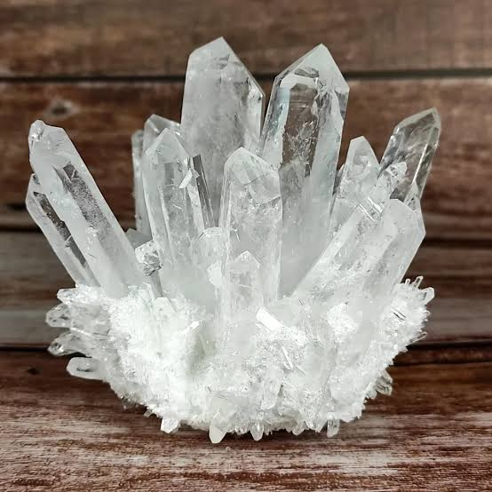
Quartzo (SiO2)
Propriedades e resistência ao intemperismo:
Estrutura extremamente estável, com ligações Si–O fortes e sem planos de clivagem fáceis.
Por isso, é o mineral primário mais resistente ao intemperismo químico, acumulando-se residualmente no solo.
Quartzo (SiO2)
Importância no solo:
- Define grande parte da textura arenosa dos solos;
- Contribui pouco para a fertilidade química (praticamente inerte);
- Influencia positivamente a drenagem e a aeração;
- Tem baixa capacidade de retenção de água e nutrientes.
Quartzo (SiO2)
Feldspatos
Os feldspatos são os minerais mais abundantes da crosta terrestre.
Dividem-se principalmente em feldspatos potássicos e plagioclásios.
São tectossilicatos, com parte do Si substituída por Al na estrutura, o que gera carga negativa balanceada por cátions (K, Na, Ca).
Feldspato potássico
- O ortoclásio é o principal representante;
- Fórmula geral: KAlSi3O8;
- Intemperiza mais lentamente que os plagioclásios;
- Importante fonte primária de potássio para o solo.
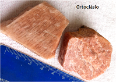
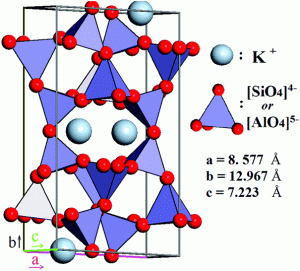
Feldspato potássico
Hidrólise do ortoclásio, com formação de caulinita:
\[2\,\text{KAlSi}_3\text{O}_8 + 2\,\text{H}^+ + 9\,\text{H}_2\text{O} \;\longrightarrow\; \text{Al}_2\text{Si}_2\text{O}_5(\text{OH})_4 + 4\,\text{H}_4\text{SiO}_4 + 2\,\text{K}^+\]
(ortoclásio) → (caulinita) + sílica dissolvida + K+ liberado à solução do solo
Plagioclásios
- Série isomórfica contínua entre albita (NaAlSi3O8) e anortita (CaAl2Si2O8);
- Quanto mais cálcicos, mais rapidamente intemperizam;
- Liberam cálcio, sódio, silício e alumínio ao solo.
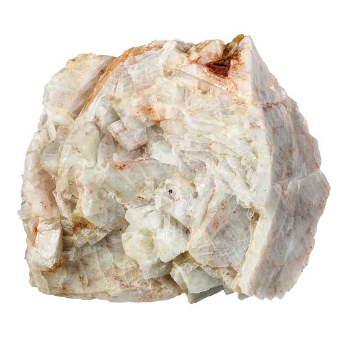
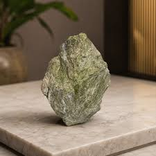
Micas
- Filossilicatos (estrutura em folhas);
- Apresentam clivagem perfeita em uma direção (lâminas);
- Os dois principais representantes de interesse agronômico são a muscovita e a biotita.
Tetraedros e octaedros
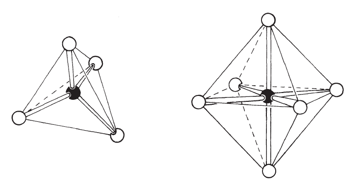
Micas
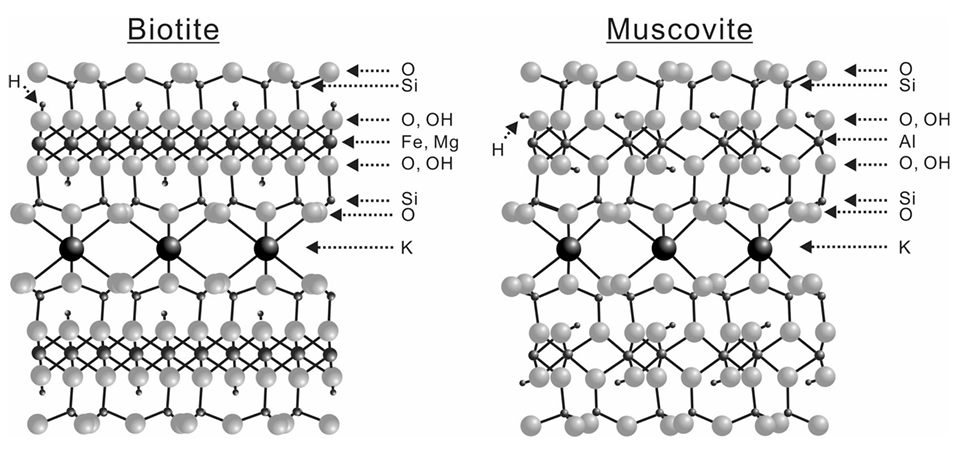
Muscovita
- Mica clara (branca), rica em K e Al;
- Fórmula geral: KAl2(AlSi3O10)(OH)2;
- Relativamente resistente ao intemperismo;
- Fonte de potássio de liberação lenta.
Muscovita
Biotita
- Mica escura, rica em Fe e Mg (além de K e Al);
- Intemperiza mais rapidamente que a muscovita;
- Libera K, Mg e Fe ao ser alterada;
- Origina vermiculita e esmectita por transformação.
Piroxênios
- Inossilicatos de cadeia simples (tetraedros unidos em cadeia única);
- Ricos em Ca, Mg e Fe;
- Exemplo mais comum: augita.
- Comuns em rochas basálticas;
- Intemperizam com relativa rapidez;
- Liberam Ca, Mg, Fe e Si, contribuindo para solos mais férteis (ex.: derivados de basalto).
Anfibólios
- Inossilicatos de cadeia dupla;
- Estrutura mais complexa que a dos piroxênios;
- Também ricos em Ca, Mg e Fe, além de conterem OH na estrutura;
- A hornblenda é o representante mais comum;
- Intemperismo relativamente rápido;
- Contribuem com Ca, Mg e Fe para a solução do solo.
Equação geral da hidrólise dos silicatos
De forma geral, o intemperismo químico de um silicato primário pode ser representado por:
\[ \text{Silicato} + n\mathrm{H^+} + m\mathrm{H_2O} \rightarrow \text{cátions}_{(aq)} + x\mathrm{H_4SiO_4} + \text{argilomineral} \]
Ou seja: hidrólise ácida → liberação de cátions e sílica em solução → (re)precipitação de um novo mineral.
Minerais Secundários
Minerais Secundários
São minerais formados no próprio solo, a partir da alteração dos minerais primários.
Predominam na fração argila e são responsáveis pela maior parte da atividade química do solo.
Formação: transformação x neoformação
Transformação
- O mineral secundário herda parte da estrutura do mineral primário;
- Ex.: mica → ilita → vermiculita.
Neoformação
- O mineral se origina a partir de elementos liberados na solução do solo;
- Ex.: dissolução total seguida de recristalização de novos minerais.
Estrutura geral dos argilominerais — folha tetraédrica
- Unidade básica: tetraedro de Si (ou Al) coordenado por 4 oxigênios;
- Os tetraedros se unem pelos vértices, formando uma folha hexagonal contínua;
- É a mesma unidade estrutural presente nos silicatos primários.
Estrutura geral dos argilominerais — folha octaédrica
- Unidade básica: cátion (Al3+, Mg2+, Fe3+) coordenado por 6 oxigênios/hidroxilas;
- Formam folhas octaédricas do tipo gibbsita (dioctaédrica, Al) ou brucita (trioctaédrica, Mg);
- A combinação de folhas tetraédricas e octaédricas origina os diferentes argilominerais.
Estrutura geral dos argilominerais
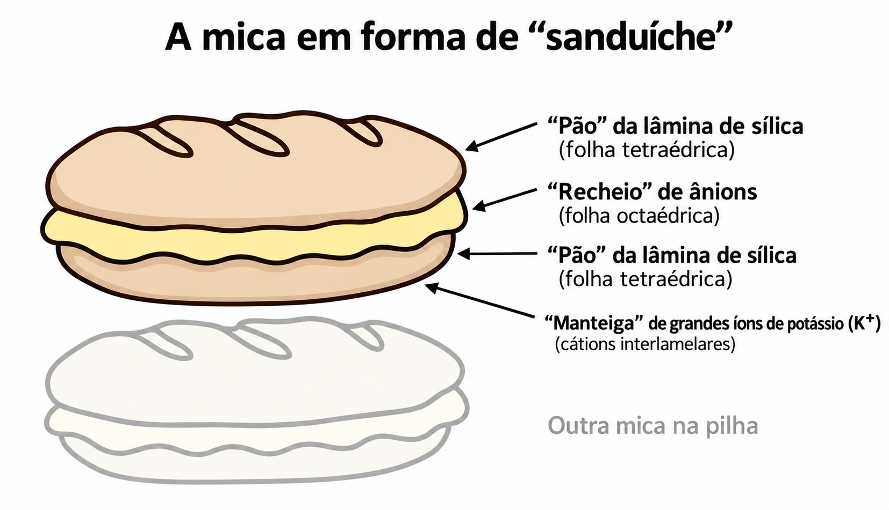
Estrutura geral dos argilominerais
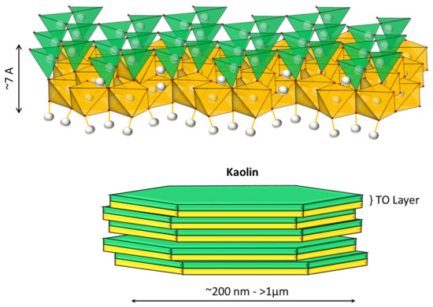
Camadas 1:1, 2:1 e 2:1:1
| Tipo de camada | Composição | Exemplo |
|---|---|---|
| 1:1 | 1 folha tetraédrica + 1 folha octaédrica | Caulinita |
| 2:1 | 2 folhas tetraédricas + 1 folha octaédrica | Ilita, esmectita, vermiculita |
| 2:1:1 | 2:1 + folha octaédrica adicional (interlamelar) | Clorita |
Substituição isomórfica e origem da carga elétrica
Ocorre quando um cátion de menor carga substitui outro na estrutura (ex.: Al3+ por Si4+; Mg2+ por Al3+), sem alterar a estrutura cristalina.
Gera carga negativa permanente, responsável por grande parte da CTC dos argilominerais 2:1.
Grupo da Caulinita — estrutura 1:1
- Camada 1:1 fortemente ligada por pontes de hidrogênio entre camadas adjacentes;
- Pouquíssima substituição isomórfica;
- Argilomineral mais comum em solos tropicais muito intemperizados.
Grupo da Caulinita — estrutura 1:1
Caulinita — propriedades
- Baixa CTC (cerca de 3 a 15 cmolc/kg);
- Baixa superfície específica;
- Não expansiva (não incha com água);
- Baixa plasticidade e coesão em relação às argilas 2:1.
Caulinita — ocorrência
Predomina em solos altamente intemperizados de regiões tropicais e subtropicais, como os Latossolos brasileiros.
Reflete estágio avançado de intemperismo, com perda quase completa de sílica e bases trocáveis.
Caulinita → Gibbsita — equação de dessilicificação
Em condições de intemperismo extremo (alta lixiviação de sílica), a caulinita pode se alterar para gibbsita:
\[\text{Al}_2\text{Si}_2\text{O}_5(\text{OH})_4 + 5\,\text{H}_2\text{O} \;\longrightarrow\; 2\,\text{Al(OH)}_3 + 2\,\text{H}_4\text{SiO}_4\]
Etapa final da dessilicificação: perda quase total de Si, restando óxido/hidróxido de Al — marca dos Latossolos mais intemperizados.
Grupo das Ilitas (micas hidratadas)
- Estrutura 2:1, derivada diretamente da mica por perda parcial de K;
- Camada com carga negativa relativamente alta, parcialmente satisfeita por K interlamelar;
- CTC intermediária (cerca de 15 a 40 cmolc/kg).
Ilita — propriedades e ocorrência
- Fonte importante de potássio de liberação lenta;
- Comum em solos jovens a moderadamente intemperizados;
- Frequente em sedimentos e solos de regiões temperadas.
Grupo dos filossilicatos expansivos
- Estrutura 2:1 com fraca ligação entre camadas;
- Alta substituição isomórfica, gerando elevada carga negativa;
- Água e cátions entram facilmente no espaço interlamelar.
Esmectita
Esmectita — propriedades
- CTC muito alta (60 a 150 cmolc/kg);
- Alta superfície específica;
- Mineral expansivo: incha ao umedecer e contrai ao secar;
- Alta plasticidade e pegajosidade.
Esmectita — ocorrência e manejo
Comum em solos pouco intemperizados, derivados de rochas básicas (ex.: basalto) em climas com estação seca definida — Vertissolos.
A expansão e a contração causam fendilhamento do solo, dificultando o manejo mecânico e podendo danificar raízes e estruturas.
Vermiculita — estrutura e propriedades
- Estrutura 2:1, geralmente originada da alteração da biotita;
- Carga negativa alta, parcialmente ocupada por Mg e água interlamelar;
- CTC alta (100 a 150 cmolc/kg);
- Expansão moderada (menor que a da esmectita).
Vermiculita — ocorrência no solo
Mineral de transição entre a mica primária e argilominerais mais intemperizados.
Comum em solos de regiões temperadas e em horizontes pouco profundos de solos tropicais jovens.
1:1 vs 2:1
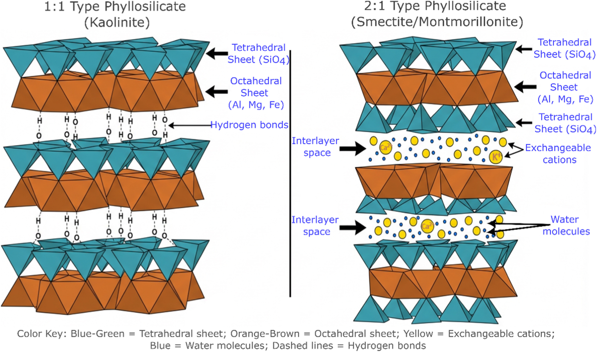
Óxidos e hidróxidos de ferro
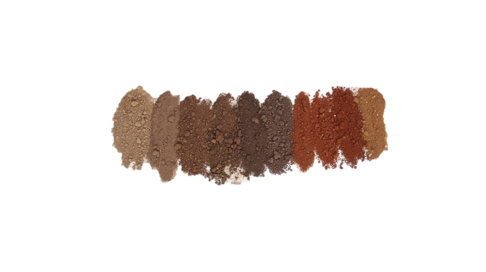
Óxidos e hidróxidos de ferro — hematita
- Fe2O3; forma cristalina bem ordenada;
- Confere coloração vermelha característica ao solo;
- Comum em solos bem drenados e intemperizados de clima tropical.
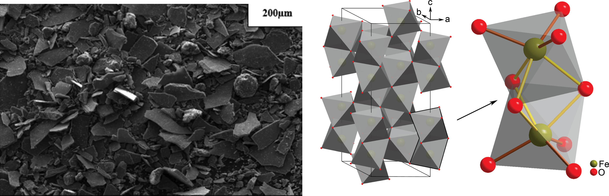
Óxidos e hidróxidos de ferro — hematita
Óxidos e hidróxidos de ferro — goethita
- FeOOH; mineral de ferro mais comum nos solos em geral;
- Confere coloração amarela/amarelo-brunada;
- Estável em ampla faixa de condições, inclusive climas úmidos e frios.
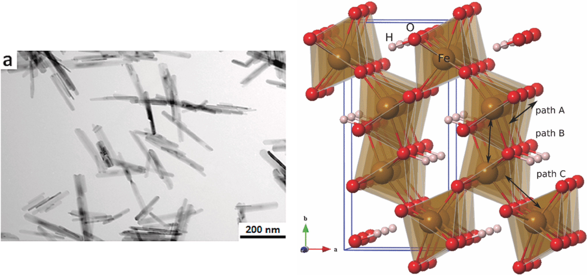
Goethita ⇌ Hematita — equação de desidratação
\[2\,\text{FeOOH} \;\rightleftharpoons\; \text{Fe}_2\text{O}_3 + \text{H}_2\text{O}\]
Climas mais quentes e secos favorecem a hematita (desidratação); climas mais úmidos e frios favorecem a goethita — por isso a cor do solo é um indicador climático e mineralógico.
Óxidos de ferro
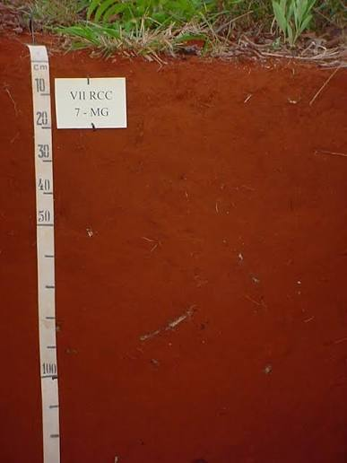
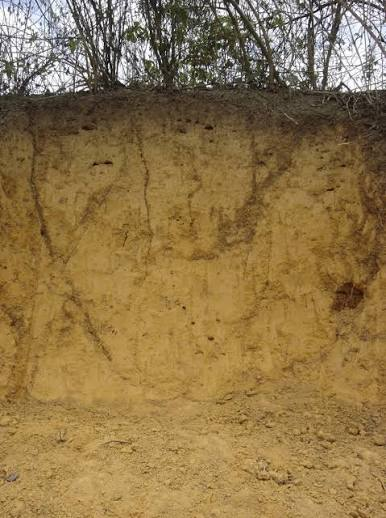
Óxidos de ferro — importância
Além de definirem a cor do solo, os óxidos de Fe atuam como agentes cimentantes de agregados e possuem carga variável, dependente do pH.
São importantes adsorventes de fósforo e de alguns micronutrientes.
Outros óxidos de ferro
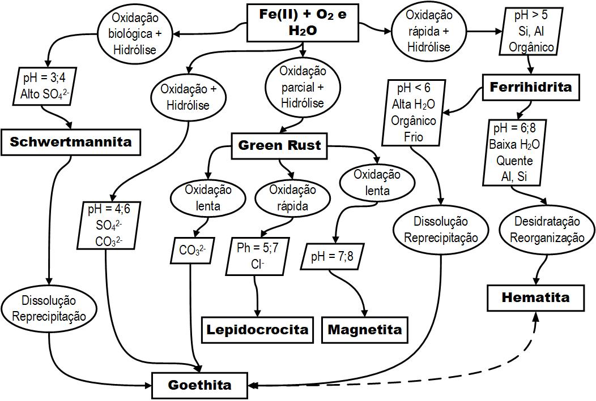
Óxidos e hidróxidos de alumínio — gibbsita
- Al(OH)3; forma-se em estágios avançados de intemperismo (dessilicificação);
- Comum em Latossolos muito intemperizados;
- Possui carga variável, dependente do pH do meio.
Carga variável x carga permanente
| Tipo de carga | Origem | Minerais |
|---|---|---|
| Permanente | Substituição isomórfica na estrutura | Argilominerais 2:1 (esmectita, vermiculita, ilita) |
| Variável | Dissociação de grupos OH na superfície, dependente do pH | Óxidos e hidróxidos de Fe e Al, caulinita (bordas) |
Minerais amorfos e de baixa cristalinidade
- Alofana e imogolita: aluminossilicatos de baixa ordem cristalina;
- Alta superfície específica e alta capacidade de retenção de água e P;
- Formam-se rapidamente a partir de material vulcânico.
Sequência de intemperismo e neoformação mineral
De modo geral, a sequência de estágios de intemperismo segue:
Minerais primários facilmente intemperizáveis → argilominerais 2:1 → argilominerais 1:1 (caulinita) → óxidos de Fe e Al.
Essa sequência reflete a perda progressiva de sílica e de bases trocáveis ao longo do tempo.
Distribuição dos argilominerais: solos tropicais x temperados
| Ambiente | Mineralogia predominante | Exemplo de solo |
|---|---|---|
| Tropical, muito intemperizado | Caulinita, óxidos de Fe/Al | Latossolos |
| Tropical, pouco intemperizado (rocha básica, clima sazonal) | Esmectita | Vertissolos |
| Temperado / jovem | Ilita, vermiculita, clorita | Solos de regiões temperadas |
Transformação e neoformação de minerais no solo
| Mineral primário — Rocha | Elementos liberados | Minerais secundários — Solo |
|---|---|---|
| Quartzo | Si | Caulinita, sílica amorfa |
| Feldspato potássico | K, Si, Al | Caulinita, ilita |
| Plagioclásio | Ca, Na, Si, Al | Caulinita, esmectita |
| Biotita | K, Mg, Fe, Si | Vermiculita, esmectita, clorita |
| Muscovita | K, Al, Si | Ilita, vermiculita |
| Piroxênio | Ca, Mg, Fe, Si | Esmectita, óxidos de Fe |
| Anfibólio | Ca, Mg, Fe, Si | Esmectita, clorita, óxidos de Fe |
| Olivina | Mg, Fe, Si | Esmectita, óxidos de Fe |
| Apatita | Ca, P | Fosfatos secundários |
| Magnetita | Fe | Hematita, goethita |
Importância Agronômica dos Minerais do Solo
Importância agronômica dos minerais do solo
A mineralogia do solo não é apenas uma questão descritiva: ela condiciona diretamente o manejo, a fertilidade e o potencial produtivo.
A seguir, veremos as principais implicações agronômicas da mineralogia primária e secundária.
Capacidade de troca catiônica (CTC) e mineralogia
- A CTC depende diretamente do tipo e da quantidade de argilominerais presentes;
- Argilas 2:1 (esmectita, vermiculita) apresentam CTC muito maior que argilas 1:1 (caulinita);
- Óxidos de Fe e Al contribuem pouco para a CTC em pH próximo à neutralidade.
CTC — argilas 1:1 x 2:1
| Mineral | CTC (cmolc/kg) | Superfície específica |
|---|---|---|
| Caulinita | 3–15 | Baixa |
| Ilita | 15–40 | Média |
| Vermiculita | 115–250 | Muito alta |
| Esmectita | 50–160 | Alta |
Retenção e disponibilidade de água
- Argilas 2:1 e minerais amorfos retêm muito mais água que a caulinita e a areia;
- Solos cauliníticos drenam mais rápido, mas têm menor reserva hídrica;
- A mineralogia influencia diretamente o manejo da irrigação.
Estrutura e agregação do solo
Óxidos de Fe e Al atuam como agentes cimentantes, favorecendo agregados estáveis em Latossolos.
Argilas esmectíticas, por expandirem e contraírem, podem tanto formar quanto destruir agregados, dependendo do teor de sódio e da umidade.
Fixação de fósforo pelos óxidos de Fe e Al
- Óxidos de Fe e Al possuem forte afinidade química pelo fosfato;
- Em solos ricos nesses óxidos (ex.: Latossolos), grande parte do P aplicado é adsorvida e torna-se pouco disponível;
- Exige manejo específico da adubação fosfatada (fosfatagem corretiva, adubação localizada).
Fixação de fósforo pelos óxidos de Fe e Al
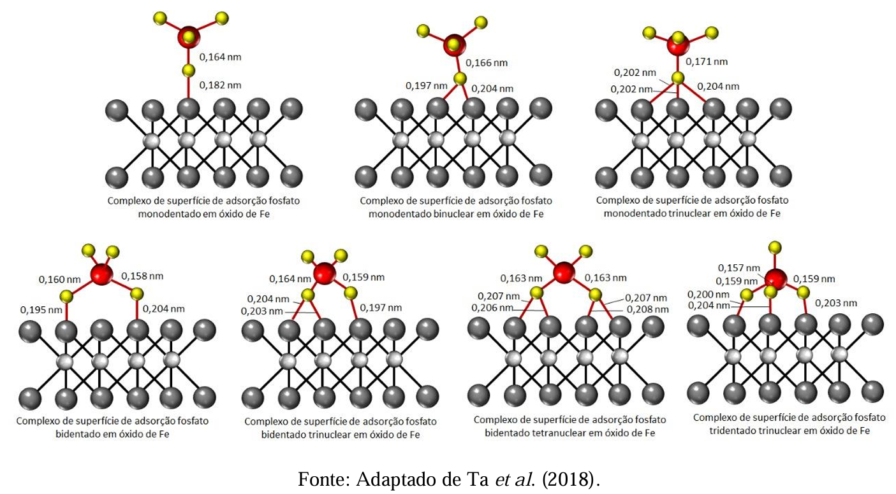
Fixação de fósforo pelos óxidos de Fe e Al
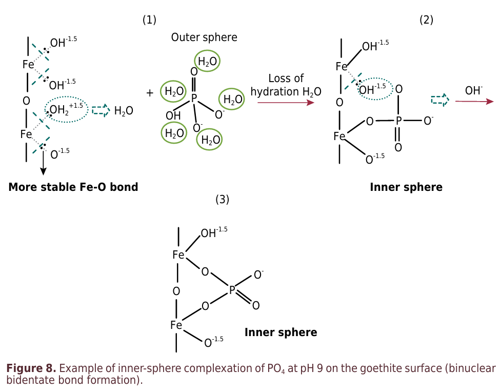
Disponibilidade de potássio — micas e feldspatos
- Micas e feldspatos potássicos são fontes naturais de K de liberação lenta;
- Solos derivados desses minerais tendem a manter suprimento contínuo de K ao longo do tempo;
- Solos muito intemperizados (pobres nesses minerais) dependem mais de adubação potássica.
Disponibilidade de potássio — micas
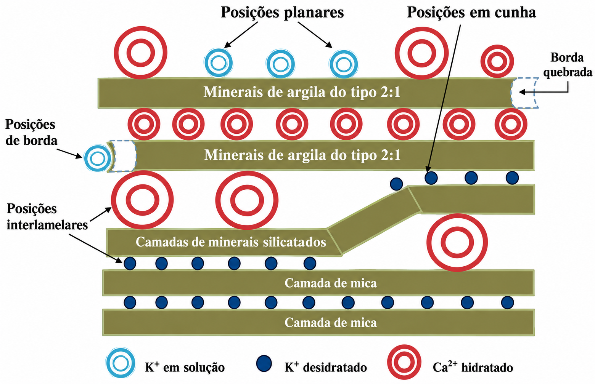
pH do solo e reatividade dos óxidos
Óxidos de Fe e Al apresentam carga variável, dependente do pH — carga positiva em pH baixo, negativa em pH alto.
O ponto de carga zero (PCZ) desses minerais explica por que solos oxídicos podem apresentar CTC efetiva muito baixa em pH ácido.
Cor do solo como indicador mineralógico
- Hematita → cores avermelhadas (bom indicador de boa drenagem);
- Goethita → cores amarelo-brunadas;
- Cores acinzentadas/esverdeadas indicam condições de redução (excesso de água, baixo O2);
- A cor é uma ferramenta prática de campo para inferir mineralogia e drenagem.
Mineralogia e classificação de solos
| Classe de solo | Mineralogia típica | Implicação agronômica |
|---|---|---|
| Latossolos | Caulinita + óxidos de Fe/Al | Alta fixação de P, boa estrutura, baixa CTC |
| Argissolos | Caulinita, misto | Fertilidade intermediária |
| Vertissolos | Esmectita | Alta CTC, problemas físicos (fendilhamento) |
| Cambissolos/Neossolos | Minerais primários abundantes | Maior fertilidade natural, menor evolução |
Mineralogia e manejo da adubação
- Solos cauliníticos/oxídicos: adubação frequente e parcelada, atenção à fixação de P;
- Solos esmectíticos: cuidado com a sodicidade e o manejo físico, boa retenção de nutrientes;
- Solos ricos em minerais primários: aproveitar a liberação natural de nutrientes no planejamento da adubação.
Mineralogia e erosão / estabilidade de agregados
A estabilidade dos agregados, fortemente ligada à presença de óxidos de Fe/Al, influencia diretamente a suscetibilidade do solo à erosão.
Solos com argilas expansivas e sem boa cimentação por óxidos tendem a ser mais suscetíveis à desagregação.
Micronutrientes e minerais primários residuais
- Minerais primários acessórios (magnetita, ilmenita, apatita) também liberam micronutrientes (Fe, Mn, Zn, entre outros) durante o intemperismo;
- A ausência desses minerais em solos muito intemperizados pode gerar deficiências de micronutrientes.
Minerais no Brasil
Minerais no Brasil
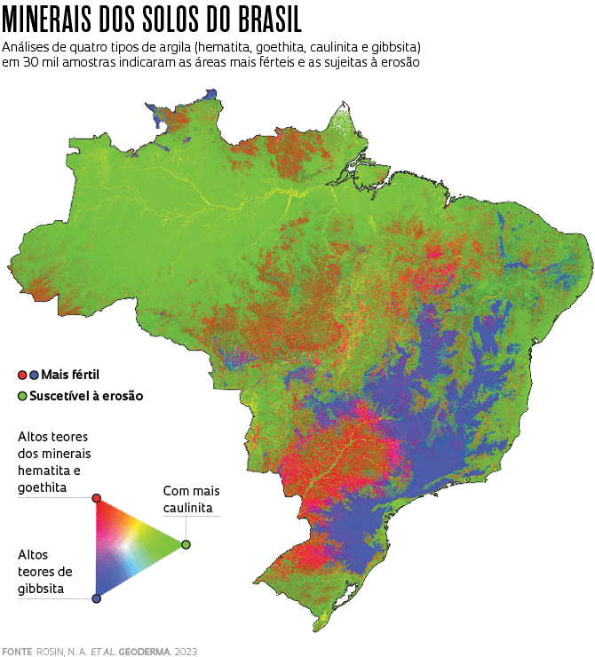
Identificação mineral
Identificação mineral
Os raios X foram descobertos em novembro de 1895 pelo físico alemão Wilhelm Conrad Röntgen (1845–1923).
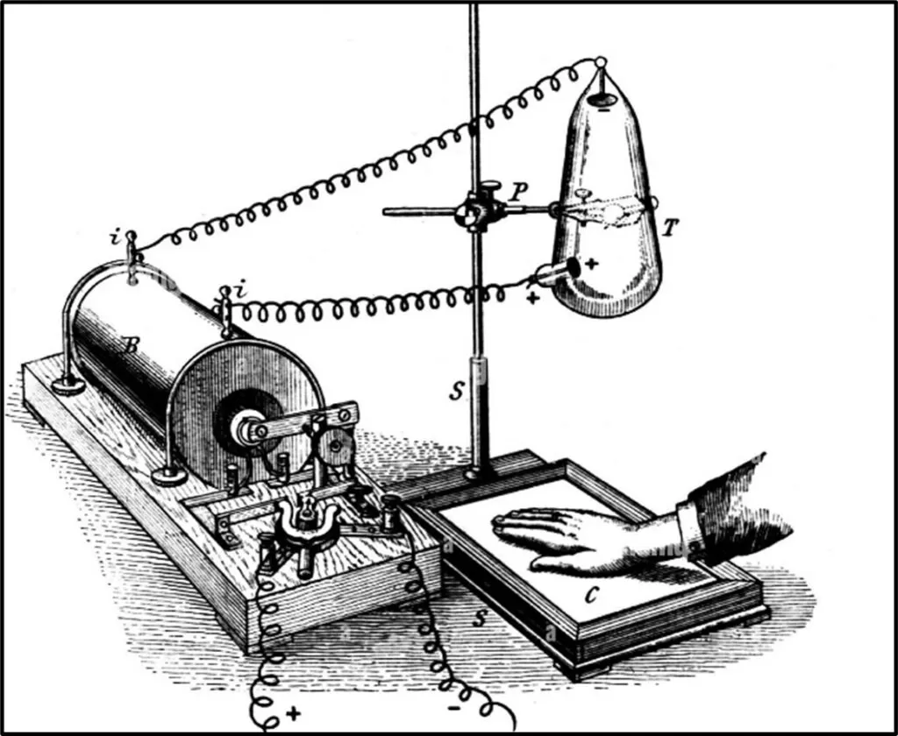
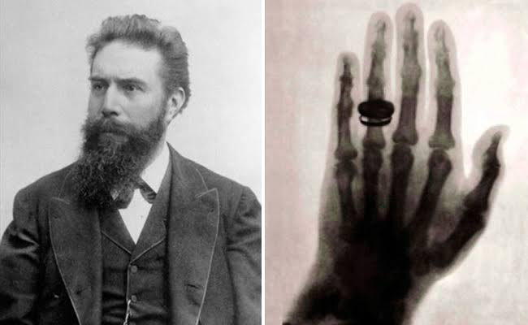
Identificação mineral
Difração de raios X e Lei de Bragg
Derivada pelos físicos ingleses Sir William Henry Bragg e William Lawrence Bragg, pai e filho, em 1913.
\[ \boxed{ n\lambda = 2d\sin(\theta) } \]
onde:
- \(n\) — ordem de difração;
- \(\lambda\) — comprimento de onda da radiação incidente;
- \(d\) — distância interplanar dos planos cristalográficos;
- \(\theta\) — ângulo de Bragg (ângulo de incidência em relação ao plano cristalográfico).
Identificação mineral - Difração de raios X
Preparo de amostras
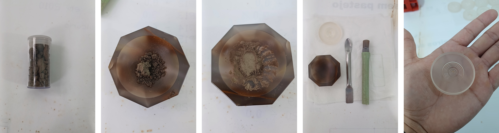
Identificação mineral - Difração de raios X
Preparo de amostras
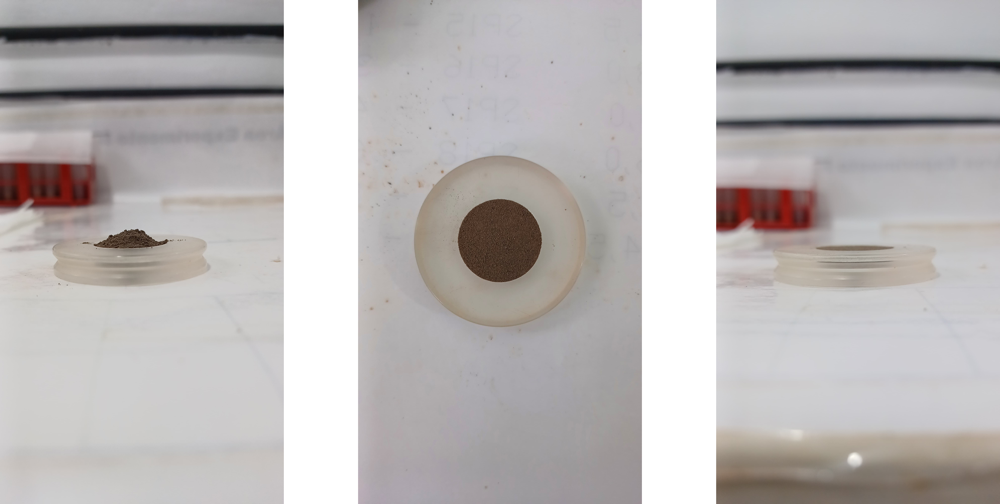
Identificação mineral - Difração de raios X
Identificação mineral - Difração de raios X
DRX caulinita
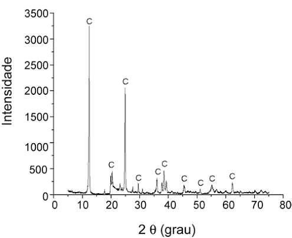
Identificação mineral - Difração de raios X
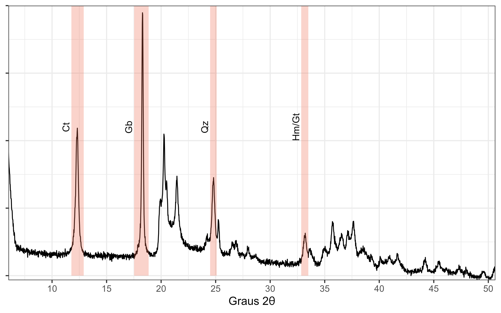
Fim!